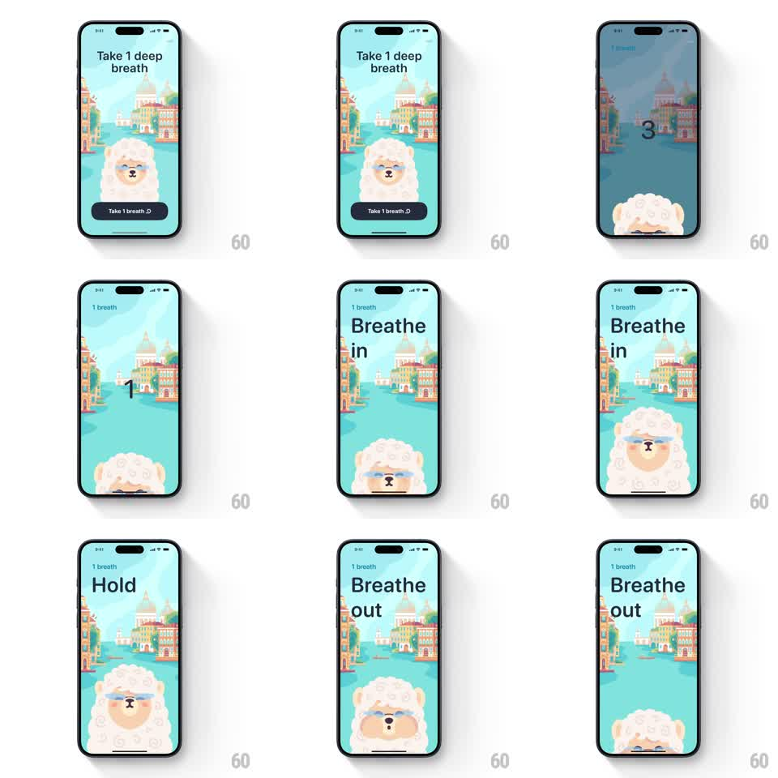

Media
Frame-by-frame

Rebuild this interaction 1:1: Mindllama's deep-breath exercise - a llama mascot that sinks for a countdown, then rises and expands on "Breathe in," holds, and deflates on "Breathe out," scaled to the breath phase.

Rebuild this interaction 1:1: Mindllama's deep-breath exercise - a llama mascot that sinks for a countdown, then rises and expands on "Breathe in," holds, and deflates on "Breathe out," scaled to the breath phase.
## Integration
Integration: stack-agnostic spec - springs given as stiffness/damping, timed motions as duration + curve; map every value to your framework and animation library of choice.
## Scene
A storybook canal-city illustration (turquoise water, pastel buildings) fills the screen. The fluffy llama sits center with "Take 1 deep breath" above and a "Take 1 breath" pill button below. On start, a countdown (3, 2, 1) appears top-left as the llama sinks. Then the breath loop: large text top-left ("Breathe in" / "Hold" / "Breathe out") while the llama rises and grows on inhale (eyes closed, blue glasses visible at full size), holds, then shrinks and sinks on exhale.
## Motion spec
Pattern: mascot-scaled breath pacing.
- Tap the pill: the intro text and button fade (250ms) and the countdown runs - each number (3, 2, 1) at top-left for ~700ms - while the llama translateYs down ~80px and scales to 0.7, easing out of view's center.
- Breathe in (~4s): "Breathe in" text fades/slides in; the llama rises to center and scales 0.7 to 1.15 on a slow ease-in-out - the growth is the pacer.
- Hold (~2s): text swaps to "Hold"; the llama hangs at full size with a tiny idle bob (+-4px, 1s).
- Breathe out (~4s): text swaps to "Breathe out"; the llama scales back to 0.7 and sinks, mirroring the inhale curve.
- The loop repeats per breath count; the background illustration stays still throughout.
## Calibration
- The llama's scale must track the breath timing exactly - easing that finishes early leaves dead time at full lungs.
- Text changes are quick (200ms) so they never lag the phase change.
## Reduced motion
The llama holds center; a ring around it expands/contracts to pace the breath instead.
## Don't miss
- The llama's eyes close at full inhale - the face sells the calm, keep the expression change on the scale peak.
- Only the llama and text move; animating the background distracts from the pacing.